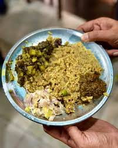

Delectable Khasi Cuisine
Khasi cuisine is known for its simplicity and use of local ingredients. The food is generally healthy, with minimal oil. A must-try dish is **Jadoh**, a fragrant rice dish cooked with meat and spices. Other popular items include **Doh-Khlieh**, a pork salad, and **Tungrymbai**, a fermented soybean curry.
